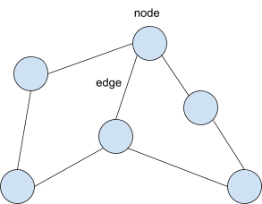
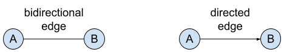
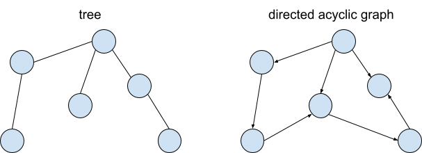

Sponsored by Replit

Graphs
7pts
Data
Math
No code
An introduction to graphs and graph theory
What is a graph? You may be thinking of a functional graph (the kind you see in math). But the graphs that appear in graph theory, a popular computer science domain with millions of applications, are wildly different.
Here is one example of a graph in CS:

Looks weird? Let’s talk about its components. A graph theory graph is a collection of nodes (the circles) connected by edges (the lines). One typical graph task is graph traversal, where you move from one node to the next via an edge connecting them.
Special Graphs

First, graphs can have different types of edges. A bidirectional edge connects nodes both ways; if a bidirectional edge connects nodes A and B, you can use a bidirectional edge to traverse from A to B or from B to A. In contrast, a directed edge only allows traversal in the arrow’s direction. If a directional edge goes from A to B, you can only travel from A to B.

Certain types of graphs have unique properties that make them useful in particular domains. A tree is a graph where every node is connected, and if there are N nodes, there are also exactly N-1 edges. You can think of a tree as having started from a single node, and every new node is added to the tree using a single edge. Trees have been heavily studied and have an expansive set of algorithms. We encourage you to google additional information, as they are outside the scope of this event. A directed acyclic graph (or DAG) is another type of graph. “Directed” means it only has directed edges, and “acyclic” means there are no cycles in the graph-- there is no way to reach the same node twice using graph traversal. DAGs also have a lot of unique properties (one of which you can read about in the "Google Maps" article).
Note: These are only two specific types of graphs. We encourage everyone to google additional information if interested. Some examples include a null graph, trivial graph, non-directed graph, complete graph, wheel graph, and many more!
So what is the purpose of graphs? They are helpful in a wide array of computing problems ranging from finding the shortest path from one place to another (Dijkstra’s algorithm) to sorting and updating a set of numbers (balanced binary search tree). Understanding graphs can make learning the frameworks and programs that our world runs on much more manageable. In addition, understanding graphs make the following modules on this website much more understandable!